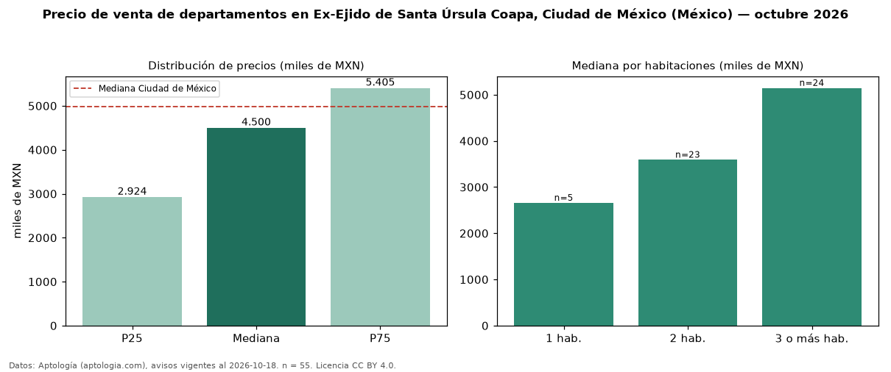

Precio de venta de departamentos en Ex-Ejido de Santa Úrsula Coapa, Ciudad de México (México) — octubre 2026
Con 55 avisos vigentes, el precio mediano de departamentos en venta en Ex-Ejido de Santa Úrsula Coapa, Ciudad de México (México) es MXN 4,50 millones. Eso es 10 % por debajo de la mediana de Ciudad de México para departamentos (MXN 4,99 millones). Por metro cuadrado, la mediana es MXN 46.702/m² (n = 49 avisos con área), 13 % por debajo de Ciudad de México (MXN 53.447/m²). El área mediana anunciada es 82 m². El segmento con más oferta es el de 3 o más habitaciones (24 avisos, mediana MXN 5,15 millones); pasar de 1 habitación a 3 o más habitaciones cambia la mediana +94 %. Por precio mediano es el puesto 37 de 51 colonias de Ciudad de México con al menos 30 avisos de departamentos en venta (MXN): en la franja media. La mitad central de los avisos va de MXN 2,92 millones a MXN 5,41 millones (razón 1,8), una dispersión moderada. Datos: Aptología (aptologia.com), CC BY 4.0 — https://www.aptologia.com/. Archivos: PDF, CSV con las cifras y gráfica PNG.

| Avisos únicos | 55 |
|---|---|
| Percentil 25 | COP 2.924.500 |
| Mediana | COP 4.500.000 |
| Percentil 75 | COP 5.405.000 |
| Mediana por m² | COP 46.702 |
Fuente: avisos vigentes de portales inmobiliarios recopilados por Aptología, deduplicados (mínimo 30 avisos únicos por celda). Precios pedidos, no cerrados. Fecha: 2026-10-18.